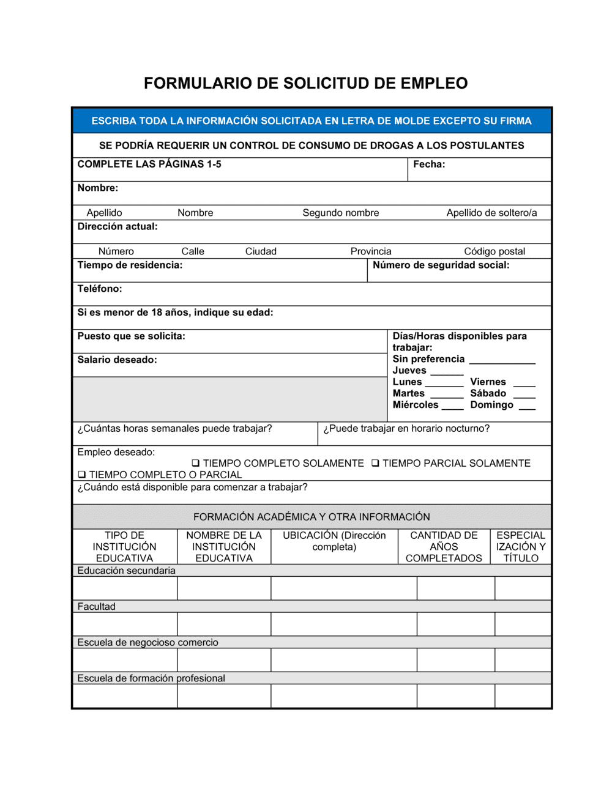

3. Código en Python
def hola_mundo():
print("¡Hola, mundo!")

HTML, o HyperText Markup Language, es el lenguaje de marcado estándar que se utiliza para crear páginas web. Básicamente, actúa como la columna vertebral de las páginas web, estructurando el contenido mediante etiquetas (tags).
HTML, o HyperText Markup Language, es el lenguaje de marcado estándar que se utiliza para crear páginas web. Básicamente, actúa como la columna vertebral de las páginas web, estructurando el contenido mediante etiquetas (tags).
HTML, o HyperText Markup Language, tiene una historia fascinante que comienza en 1989, cuando Tim Berners-Lee, un físico del CERN, desarrolló un sistema de hipertexto para compartir documentos entre científicos.

Python (con "y", no "phyton") es un lenguaje de programación de alto nivel, conocido por su facilidad de uso y legibilidad. Fue creado por Guido van Rossum y lanzado por primera vez en 1991.
Para crear enlaces a otras páginas se usa la etiqueta <a>:
Ejemplo de una lista con temas de Python:
Ejemplo de una tabla con funciones matemáticas en Python:
| Función | Descripción |
|---|---|
abs(x) |
Valor absoluto de x |
pow(x, y) |
x elevado a la potencia y |
round(x) |
Redondea x al entero más cercano |
Los formularios permiten la interacción con el usuario:
Se pueden agregar imágenes y videos a las páginas web.